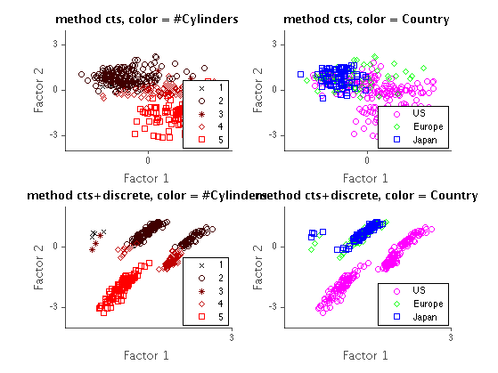

function catFAdemoAuto()
load autoData;
Dz = 2;
setSeed(3);
figure(1); clf
modelC = catFAfit([], data.continuous', Dz, 'maxIter', 3);
meanC = catFAinferLatent(modelC, [], data.continuous');
catFAdemoAutoPlot(data, meanC, 'cts', nClass, [1,2]);
setSeed(3);
modelCD = catFAfit(data.discrete', data.continuous', Dz, 'maxIter', 10);
meanCD = catFAinferLatent(modelCD, data.discrete', data.continuous');
figure(1);
catFAdemoAutoPlot(data, meanCD, 'cts+discrete', nClass, [3,4])
end
function catFAdemoAutoPlot(data, mu, str, nClass, subplots)
[D,N] = size(data.continuous);
features = [1 3];
for ii = 1:numel(features)
i = features(ii);
if i == 1
colors = [0 0 0; 1/4 0 0; 2/4 0 0; 3/4 0 0; 1 0 0];
markers = {'x','o','*','d','s'};
elseif i == 3
colors = [1 0 1; 0 1 0; 0 0 1];
markers = {'o','d','s'};
end
subplot(2,2,subplots(ii))
hold on
for j = 1:nClass(i)
idx = find(data.discrete(i,:) == j);
h(j) = plot(mu(1,idx), mu(2,idx),'o','color', colors(j,:),'marker',markers{j});
end
if i == 1
legend('1','2','3','4','5','location','southeast');
ht = title(sprintf('method %s, color = #Cylinders', str));
elseif i == 3
legend('US','Europe','Japan','location','southeast');
ht = title(sprintf('method %s, color = Country', str));
end
hx = xlabel('Factor 1');
hy = ylabel('Factor 2');
set(gca,'fontname','Helvetica');
set([hx,hy],'fontname','avantgarde','fontsize',13,'color',[.3 .3 .3]);
set(ht,'fontname','avantgarde','fontsize',13,'fontweight','bold');
set(gca,'box','off','tickdir','out','ytick',[-3 0 3],'xtick',[-3 0 3], ...
'ticklength',[.02 .02],'xcolor',[.3 .3 .3],'ycolor',[.3 .3 .3],'linewidth',1);
end
end
Iter 1 Lower bound -8.509632, increase by NaN
Iter 2 Lower bound -7.119670, increase by 1.389962
Iter 3 Lower bound -6.112891, increase by 1.006779
Dm =
18
Nm =
392
Iter 1 Lower bound -16.557683, increase by NaN
Iter 2 Lower bound -11.412196, increase by 5.145487
Iter 3 Lower bound -10.092427, increase by 1.319769
Iter 4 Lower bound -9.713599, increase by 0.378828
Iter 5 Lower bound -9.580703, increase by 0.132895
Iter 6 Lower bound -9.509379, increase by 0.071324
Iter 7 Lower bound -9.462066, increase by 0.047313
Iter 8 Lower bound -9.427433, increase by 0.034633
Iter 9 Lower bound -9.400484, increase by 0.026949
Iter 10 Lower bound -9.378637, increase by 0.021848
